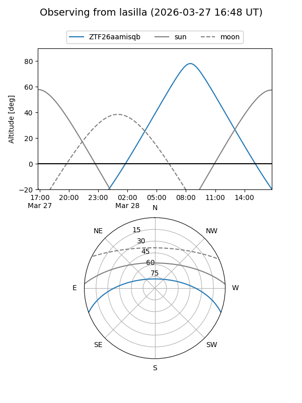
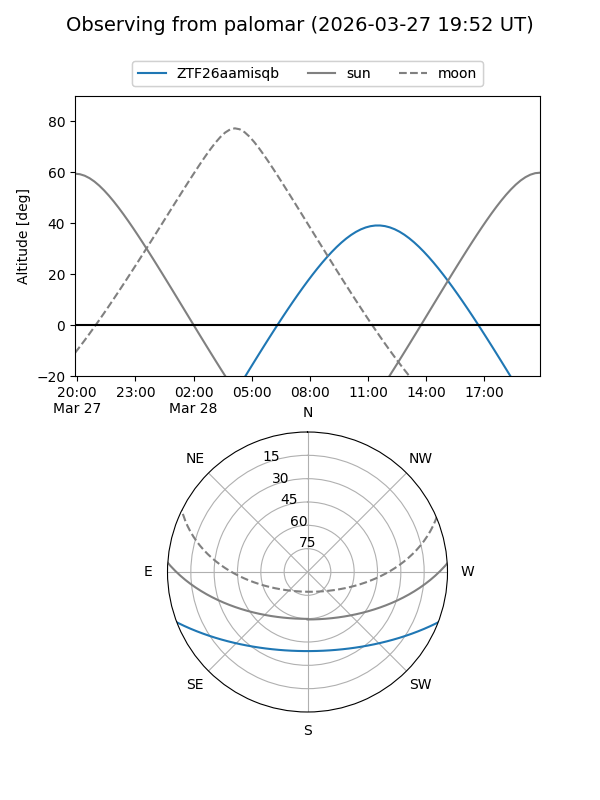

ZTF26aamisqb
Target ZTF26aamisqb at 2026-03-28 12:15
Aliases and brokers:
FINK: link
Lasair: link
ALeRCE: link
alt names
ZTF26aamisqb (ztf,fink_ztf)
Coordinates:
equatorial (ra, dec) = 241.3677,-17.41661
equatorial (HMS+DMS) = 16:05:28.26,-17:24:59.78
galactic (l, b) = (355.1195,+25.22105)
Flags:
Photometry:
last ztfg=17.97
1 ztfg detections
Lightcurve
Visibility


Additional plots